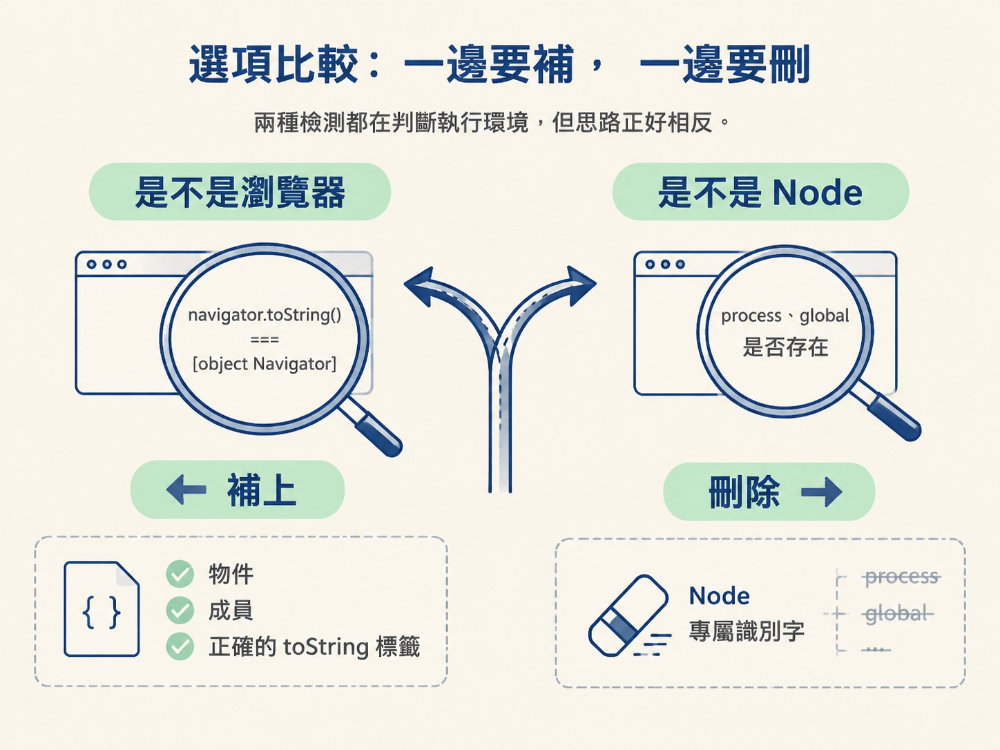
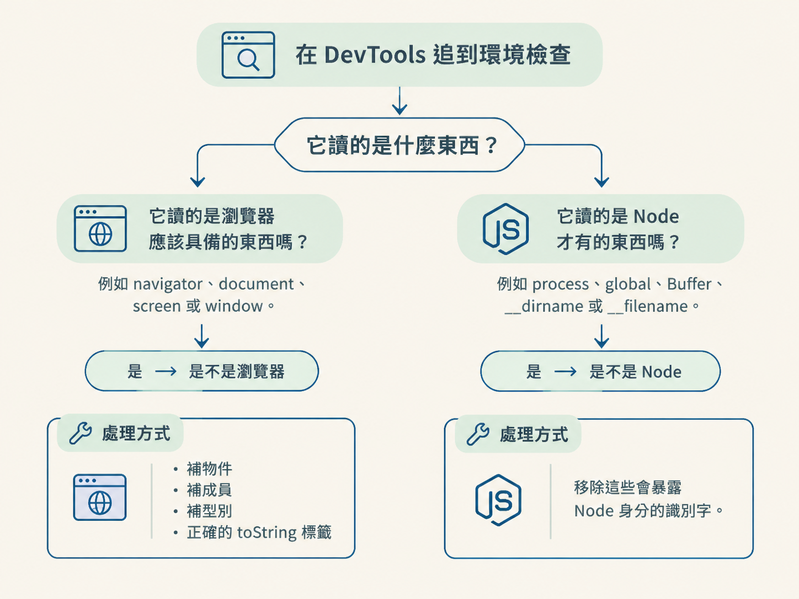

你已經用 Proxy 找出缺少的屬性，也補上八大前端物件。程式終於不再報錯，看起來像是修好了，但本來應該產生的簽名或 cookie，卻變成 false；第二個請求也可能照樣被擋。
這時問題通常不只是「少了什麼」，而是網站正在主動檢查執行環境。它像門口的警衛，不只看你有沒有帶證件，還會確認證件是不是真的。
你要做的決定是：眼前的程式碼在確認「這是不是瀏覽器」，還是在抓「這是不是 Node」？前者需要補出正確的瀏覽器特徵；後者則要藏起 Node 留下的痕跡。判斷錯方向，就可能補了一大圈，仍然卡在原地。
分辨「是不是瀏覽器」與「是不是 Node」兩類環境檢測，並根據檢查目標選擇正確的處理方式。
兩種檢測都在判斷執行環境，但思路正好相反。先用表格把差異攤開來看：

| 檢測思路 | 它在檢查什麼 | 通過條件 | 適合的處理方式 |
|---|---|---|---|
| 是不是瀏覽器 | 物件是否真的像瀏覽器物件，例如 navigator.toString() 是否等於 [object Navigator] |
物件存在、成員型別正確，而且 toString 標籤正確 |
補齊八大前端物件、必要成員與正確的 toString 標籤 |
| 是不是 Node | 環境中是否存在 process、global 等 Node 識別字 |
檢查程式找不到這些 Node 痕跡 | 用 delete 移除 Node 專屬識別字 |
第一類檢測是在找「瀏覽器應該有的證據」。典型寫法是呼叫物件的 toString，再與寫死的字串比較。以下 demo 便讓 navigator 回傳指定標籤：
navigator = {
toString() {
return "[object Navigator]"
},
userAgent: 'Mozilla/5.0 (Macintosh; Intel Mac OS X 10_15_7) AppleWebKit/537.36 (KHTML, like Gecko) Chrome/142.0.0.0 Safari/537.36'
}第二類檢測則反過來找「Node 才有的證據」。例如同時確認 process 與 global 是否存在，只要答案為真，就把目前環境判定成 Node：
if (navigator.toString() === '[object Navigator]') {
// (3) 基于node关键字判断是不是浏览器环境
const isNode = typeof process !== 'undefined' && typeof global !== 'undefined';
if (isNode) {
console.log("当前环境是 Node.js");
return false
} else {
console.log("当前环境不是 Node.js");
return "u82d1660a".toUpperCase() + navLength // Yuan老师的微信，想深入学逆向爬虫的联系我，结一段善缘!
}
} else {
return false
}這段程式碼把兩道門疊在一起。第一道門先用 navigator.toString() 確認「像不像瀏覽器」；通過之後，第二道門再確認「有沒有 Node 痕跡」。
因此，這兩種方法不一定是二選一。真實網站可能同時使用兩類檢測，你必須依序處理，少做任何一邊都可能拿不到正確結果。
在 DevTools 裡追到環境檢查時，不必一開始就啃完整段混淆邏輯。先盯住它讀取的物件或識別字，再問自己下面兩個問題：
navigator、document、screen 或 window。如果是，這屬於「是不是瀏覽器」的檢測。你要補的是物件、成員、型別，以及正確的 toString 標籤。process、global、Buffer、__dirname 或 __filename。如果是，這屬於「是不是 Node」的檢測。你要處理的是這些會暴露 Node 身分的識別字。
處理第二類檢測時，可以移除 Node 痕跡。下面的完整範例先把 window 接到 global，再逐一刪除 Node 識別字：
window = global
delete global
delete process
delete Buffer
delete __dirname
delete __filename完成後，當檢查碼執行 typeof process !== 'undefined' 時，結果會顯示該識別字未定義。程式便會判斷目前環境不是 Node，接著走進預期的分支。
這兩個方向很好用，但不能不看上下文就直接套用。以下幾種情況，會讓原本的處理方式失效，甚至破壞執行環境：
delete 具有副作用，刪除的對象與順序應依照已知可行的範本處理。多刪或少刪，都可能讓後續程式找不到需要的內容，嚴重時會使 Node 無法正常執行。toString 正確，仍然不一定夠。如果物件根本不存在，或成員型別不符，例如原本應該是函式卻補成一般值，檢測照樣可能失敗。toString 只是門面，物件本體也必須合理。看到navigator、document、screen或window，先往「補出正確的瀏覽器特徵」思考；看到process、global、Buffer、__dirname或__filename，則檢查是否需要移除 Node 痕跡。若兩類檢測同時出現，就兩邊都處理，但只動目標程式實際檢查的部分。
到這裡，補環境的完整迴圈已經串起來了：先用 Proxy 找缺口，再補八大前端物件與成員，最後分辨環境檢測是在找瀏覽器特徵，還是在抓 Node 痕跡。
下一節會把這套判斷放進代表性的瑞數場景，觀察網站為什麼要發出兩次請求、兩個 cookie 分別由誰產生，以及補環境實際上是在還原哪一個 cookie。